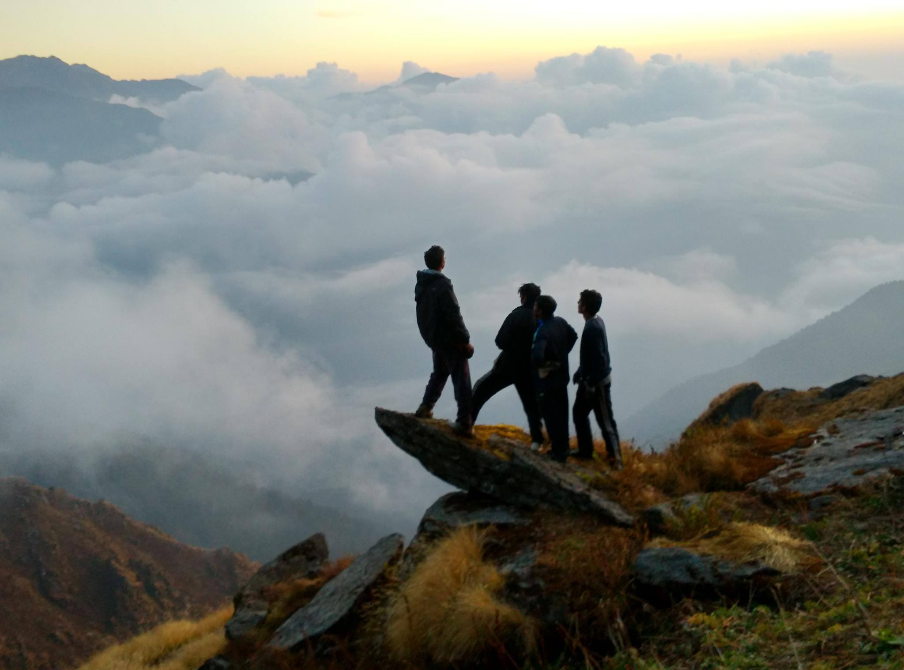
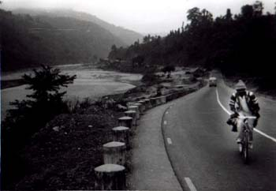
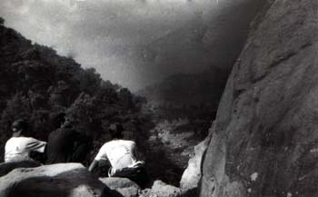

History
Adventure Sports Club in its present avatar was started in Feb 1992. It inherited the legacy of the earlier Hiking and Trekking club that existed in those days.
The objectives of starting this club were:- To carry out as many adventure sports related activities as possible, in a minimal budget.
- To introduce a novice (student or faculty) to various aspects (planning, training sessions, first aid, logistics) of Adventure sports, and train those who were serious about it.
- This would also help us in avoiding mishaps and prepare them for any eventualities that might occur during an expedition.
- Also it would serve as a local hub in the campus for various adventure activities related information and help people to plan their activity in a systematic way right from getting information about the place to the dos and don’ts on the trip.
With the academic workload and the given time-frame, which is at disposal at the students, the whole programme initially took about 3 years to get structured to its present form. Now whosoever desires to be a part of it has to just go through the motions. In a way it has evolved into a unique way of introducing adventure sports to a novice. And we are now proud of it, as much as any member feels after completing the expedition.
What’s the secret of our strategy?
As it is true for any sports physical fitness is of prime importance. And after trial and error it was found that the early morning time was best suited for it. It also helps the individual increase his will power to forgo the pleasure of early morning sleep that is big plus on the expedition as it is always advisable to start early.
More emphasis is placed on completing the course of the exercises then just becoming super athlete. The training schedule would ensure that the individual for the activity attains the minimum requirement.
During the course of exercises, importance is also laid to the fact that the fitter athlete helps the weaker one. That way it builds a good bond and develops better understanding between individuals which is so essential in the hostile terrain where tempers can run high under severe stress situations. Most of the training regime helps the designated leader to identify individuals who could form the core of the team and helps in man management.
Other aspects involve arranging logistics for the trip, getting necessary clearances well in advance, booking rail tickets and making sure all the necessary equipments are in place and in working order. Every one has to also be trained to handle the equipments and made comfortable with them.
Dangers of the activity are also discussed. And what emergency procedures need to be taken, are drilled into each and everyone. Emphasis is also laid on getting medical fitness and learning the first aid.
You can be part of the great trip but all the pleasure would be lost on a hungry stomach. Remember we venture into mostly no man’s land where at times there is hardly any blade of grass and you might have to melt snow and ice to meet your water requirements. Experience made us wiser that it should be mandatory for all of us to learn cooking and especially those items that find a place in the menus list of the trip.
Very few of us had an opportunity to learn cooking in our school days, and you cannot forgo this chance lest you want to starve. Since most of the trip members have met each other for the first time such activity of learning to cook together also helps in knowing each other.
Besides it fun time arranging for ration and fuel that needs to be carried on the expedition.
In a nutshell besides serving to minimize our expenses on the trip it also serves to help individual to develop leadership qualities, develop inter-personal skills, work in a group and also learn to give right priorities. This kind of sports rarely gives a second chance to prove one self. And one wrong thing can be very fatal to oneself and there no winners or losers here!! So one has to really deeply imbibe the 4P’s: Planning, Preparation, Prevention and Precaution in order to succeed and make the best of it.
Also care is taken during all our activity that we do not pollute the environment: we strictly adhere the “Zero garbage” policy.